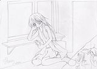

[คลังภาพ] UP งานชั่วคราวครับ "OTL [กำลังจะเคลียร์]
กระทู้นี้เป็นกระทู้ภาพวาดแรกใน ECO ของผมเลยล่ะครับ (ปกติวาดลงเว็บอื่น) เลยอยากลองวาด Fan Art ตัวละครที่รู้จักในเกมส์มั่งนะครับ (จริง ๆ พอเห็นกระทู้ของคุณ Nanase พวกโก๊ะ ครอบครัว PanSe นั่นแหละ แล้วมันมีแรงฮึด .... แม้เวลาจะไม่อำนวย -*-)
ปล. หลัง ๆ มาเป็นคลังภาพไปซะละ -*-
ผมไม่ได้ใช้ชื่อ Homin เป็นชื่อของตัวละครในเกมส์นะครับ (ใครจะใช้ก็ใช้ไป ผมไม่ว่า แค่แต่ว่าเวลาเดือดร้อนอย่ามาลามถึงผมก็แล้วกัน - -") ส่วนชื่อตัวละครจริง ๆ ของผมในเกมส์นั้นจะใช้ชื่ออะไรไม่สำคัญครับ เพราะยังไงคงไม่ได้เจอกันอยู่แล้ว -*- (ไม่ค่อยมีเวลาเล่น)
ปล. หลัง ๆ มาเป็นคลังภาพไปซะละ -*-
ข่าวใหม่ !!
ตอนนี้กำลังเคลียร์งานสุดความสามารถครับ จริง ๆ ก็เริ่มว่าง ๆ แล้วเหมือนกัน ก็เลยลองวาดรูปดู (หลังจากไม่ได้วาดมานาน) จะแนะนำติชม ต้มยำทำแกง ยังไงก็เชิญได้เลยนะครับ ยอมรับทุกความคิดเห็น ^O^
ส่วนของการ์ตูนกำลังวาดหน้าที่ 6 ครับ (ไปได้ครึ่งเดียว) ส่วนจะอัพอีกทีได้ตอนไหนต้องขอดูเวลาอีกครั้งนึงนะครับ ตอนนี้ชมภาพอื่น ๆ ไปก่อนล่ะกันนะครับ
ผมไม่ได้ใช้ชื่อ Homin เป็นชื่อของตัวละครในเกมส์นะครับ (ใครจะใช้ก็ใช้ไป ผมไม่ว่า แค่แต่ว่าเวลาเดือดร้อนอย่ามาลามถึงผมก็แล้วกัน - -") ส่วนชื่อตัวละครจริง ๆ ของผมในเกมส์นั้นจะใช้ชื่ออะไรไม่สำคัญครับ เพราะยังไงคงไม่ได้เจอกันอยู่แล้ว -*- (ไม่ค่อยมีเวลาเล่น)
รูปภาพมาใหม่
อันนี้รูปมิกุครับ คิดถึงเลยวาดสักหน่อย *-*
อันนี้อารมณ์บางส่วนตอนนี้ครับ (โทรศัพท์เจ็งไป 2 เครื่องล่ะ - -*)


การ์ตูน 4 ช่อง
หน้าที่ 1 / หน้าที่ 2 / หน้าที่ 3 / หน้าที่ 4 / หน้าที่ 5 / หน้าที่ 6
ตอนพิเศษ ช่วงที่ 1
หน้า 1 / หน้า 2 (ปก+ชื่อตอน) / หน้า 3 / หน้า 4 / หน้า 5 / หน้า 6 / หน้า 7 / หน้า 8 / หน้า 9 / หน้า 10
หน้า 11 / หน้า 12 / หน้า 13 / หน้า 14 / หน้า 15 / หน้า 16 / หน้า 17 / หน้า 18 / หน้า 19 / หน้า 20 (จบ)
Chapter 1 "Evil Rising (อสูรคืนชีพ)" Act 1 "Endless Party (งานเลี้ยงที่ไม่สิ้นสุด)"
หน้า 1 / หน้า 2 / หน้า 3 / หน้า 4 / หน้า 5 (ปก+ชื่อตอน)


FanArt ต่าง ๆ
FanArt ครอบครัว Pense (การ์ตูน 4 ช่อง) / FanArt ครอบครัว Pense (คุโระเต็มตัว) (สุดฝีมือแล้วครับ ได้แค่นี้จริง ๆ T^T)
เอ้า!! ฉลอง ??? (เกี่ยวกับวันที่ 14 กุมภาฯ และ 14 มีนาคม ... ไม่เกี่ยวนะ ==)
วาเลนไทน์ (แรเงาซะเละเลย T^T)
รูปฝึกลงสี Hatsune Miku นะครับ
รูปที่ 1 / รูปที่ 2 / รูปที่ 3
ฝึกลงสีแบบใหม่นะครับ ไฉไลกว่าเดิมแน่นอน ... รูปนี้ลงสี 2 ชั่วโมงครึ่งครับ โดยโปรแกรม SAI
ปล. ลองเอาไปเปรียบเทียบกับรูปลงสีเดิมดูก็ได้นะครับ ... จะมองเห็นความแตกต่างมากกว่า
จิ้มโลด
รูป Miku ลงสีครับ (นานมากแล้วล่ะครับ พอ ๆ กับ 4 รูปบน -3-) จิ้มโลดครับ
รูปลงสีลูกสาวข้าพเจ้าเอง "OTL Tiara Stalie
Normal Mode / BT Mode (Battle Mode) / LB Mode (Limited Break)
4 ช่องเกี่ยวกับบุหรี่ครับ หน้าที่ 1 / หน้าที่ 2 (จบ ... หรือเรียกว่าหมดมุกดี -3-)
รูปวาดที่ลอกลาย ... เรียกว่าวาดตามแบบดีกว่า "OTL จิ้มโลด
อารมณ์บางส่วนเวลาจะสอบ